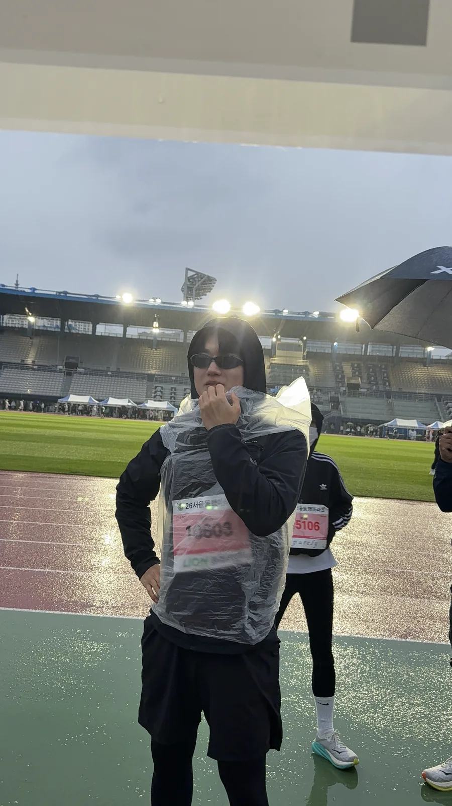
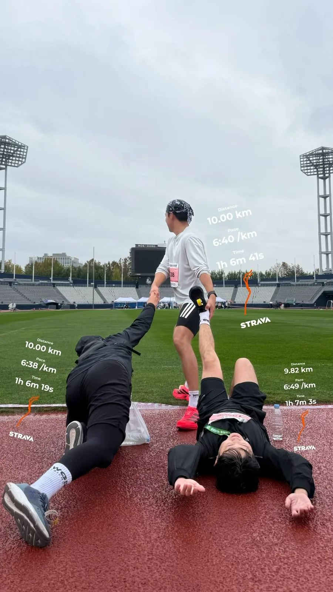
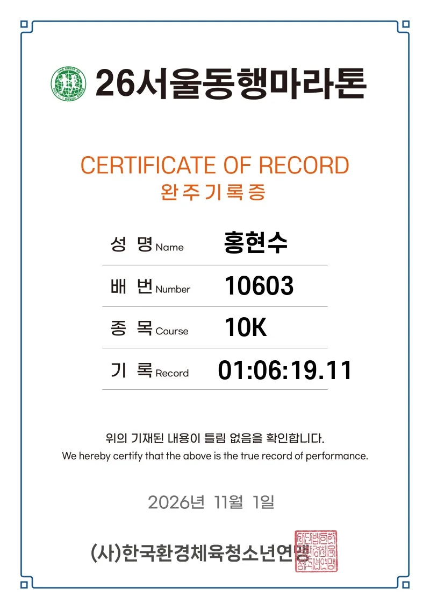

← Off the Clock
Running · A Rainy 10K at Mokdong Stadium
I ran the 10K at the 2026 Seoul Donghaeng Marathon (서울동행마라톤) and finished in 1:06:19.11. Looking through the photos, I can trace the day by what I was wearing: a clear poncho over my bib on the wet track, then a green medal ribbon around my neck on the grass.

Bib 10603 underneath the poncho. On the grass at Mokdong Stadium after the finish.
On the grass at Mokdong Stadium after the finish.
Three runners, three watches, and one last photo on the track.Official 10K finish record

November 1, 2026 · Seoul Donghaeng Marathon